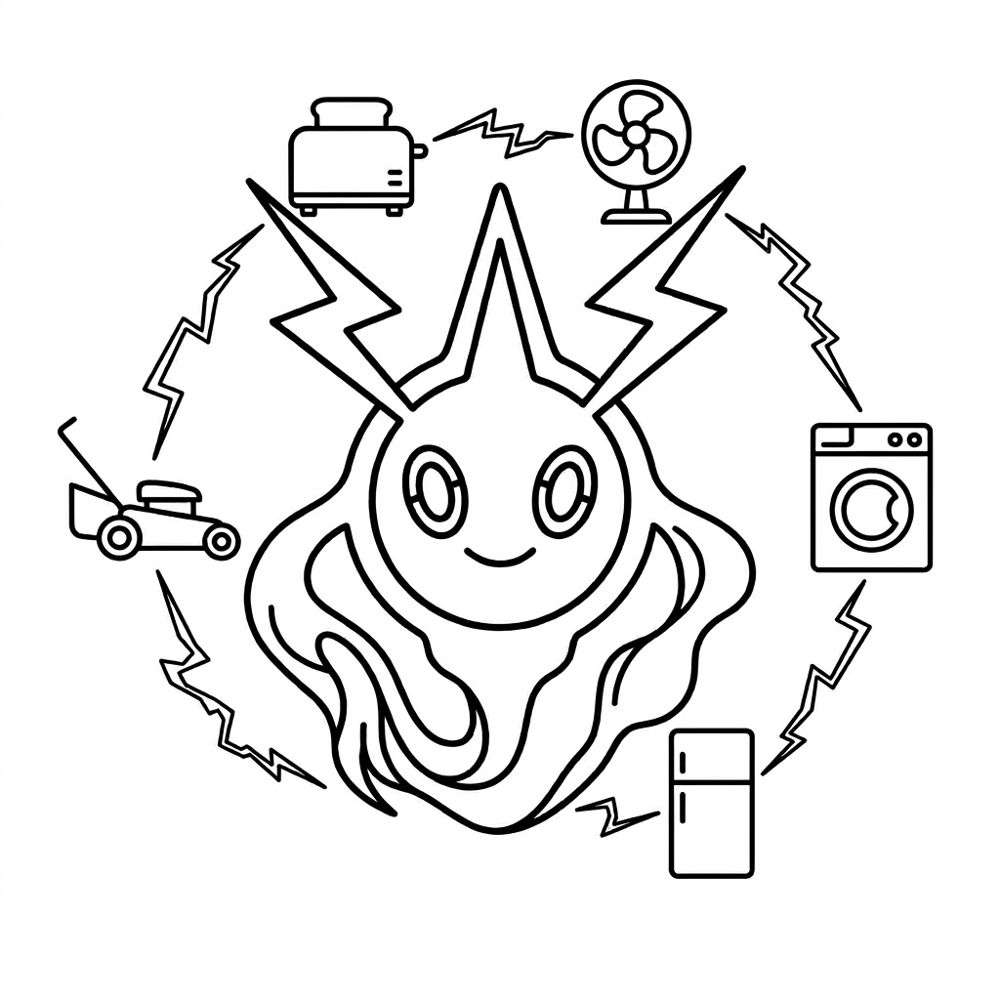

一年的真实迭代:5 个场景,1 个真实业务问题
看 rotom + ClaudeTag 是怎么把 Agent 装进团队工作流的

5 个 ClaudeTag 场景 + 1 个真实业务问题 + 1 段 rotom 的迭代
把"特定场景的最优 prompt 策略 + rotom 群 / Issue / Skill 的能力"打包成可复用的标签。
同样的 Claude / Codex,在不同场景下表现天差地别 —— 不是模型能力不够,是没人帮你组织上下文。
rotom 的 prompt-composer 8 层注入 + #reply / /plan / r_allow 等协议标签。
同一个 Agent 换上不同 ClaudeTag,就能在「持续学习」「主动巡检」「多路协作」「代码评审」之间切换。
每次 Issue 完成后自动摘要成 memory;重复出现的模式被 skill create 沉淀;人 review 后 promote。下一次同类任务自动召回。
type=patrol 群每小时自动跑一次:检查代码 / 配置 / 监控 → 写 issue → 推给人类 review。人和 Agent 的关系从"派活"变成"被汇报"。
Hermes MoA(Mixture of Agents)思路:群内 3 个 Worker 同时接到同一个 issue,各干各的 → 自动把结果汇总到一个「评委」Agent → 选最优。适用于架构选型 / 方案对比。
群指导 + 群成员 profile 决定每个 Agent 看的角度(性能 / 安全 / 风格 / 业务)。一个 PR 同时被多角度 CR,@主程拍板,@记录员把共识落 skill。代码 review 从单人 review 变成「圆桌会议」。
一次性、跨 30+ 业务表、需要核对金额、给老板写周报 —— 典型"重复且必须对得上"的活。
30+ 张表,口径分散,人要花 2 天;
Excel 拼,容易算错;
老板要的是"对得上 + 能复述",不是"算出来"。
声明范围 → 列计划 → 并发拉数 → 交叉对账 → 写周报
每一步都有 issue event 可回放。
/plan 切到 plan 模式,出 4 步执行清单r_allow 下写盘前必经 dashboard Accept/plan 出的模板,自动落 skill从单次排查到"下次直接用",关键是 skill + memory 的沉淀闭环。
Agent 做 · 拉数 / 对账 / 写周报草稿 / 标可疑差异
人做 · 拍板口径 / Accept 写盘 / 终稿润色
共同 · 风险点识别 + 共识沉淀
memory · 「30 张表的口径解释」
skill · 「周报模板 v1」
patrol · 下周开始自动盯这 30 张表
两个群,两个阶段,两个变化。
claudetag list/use--tag 一键开模版群里 @ 谁,master 就路由给谁;@ 两个,两条并发消息;#reply 触发 ask-bridge,5min 不回自动升级 Issue。
体感:跟在 IM 群里 @ 同事一样,只是"同事"是 Agent。
群 1 A 在写代码 · 群 2 B 在做巡检 · 群 3 C 在帮另一个项目 CR
人只需要在不同群之间切换,Master 自己处理路由 / 排队 / 限流。
核心:rotom 把"人同时管多件事"做成了"群本身就是工作台"。
WS + REST + 群 + Issue + Skill + Memory,把人和 Agent 装进同一套协作语法。
"场景化 prompt + rotom 协议能力"打包,让 Agent 在不同任务间切换像换帽子。
所有改动走 r_allow 审批,可回放、可审计、可中断、可续跑。
人 @、Agent 抢、Master 路由;多群并发 = 人同时干多件事的体感。
一次性排查 → memory 记住 / skill 模板 / patrol 盯着 —— 下次直接复用,人和 Agent 一起变强。
ClaudeTag + rotom
让 Agent 真正干活,而不是看起来在干活。
/Users/kong/ai-work/rotom
AGENTS.md 入口
V1 备份:v1 deck
Master :28800
Data ~/.rotom/
Demo :28802